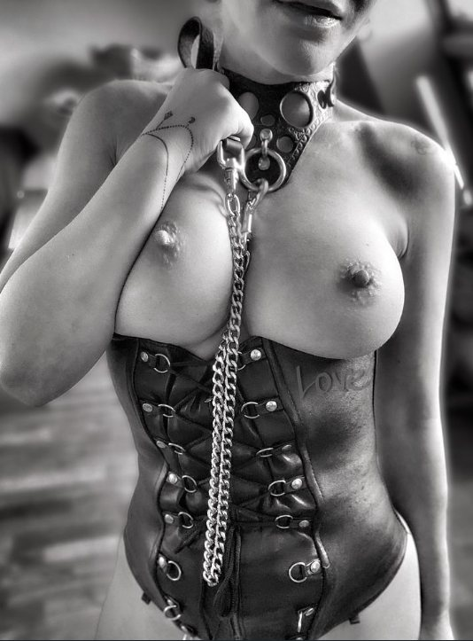
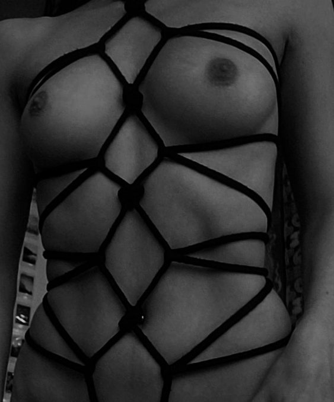
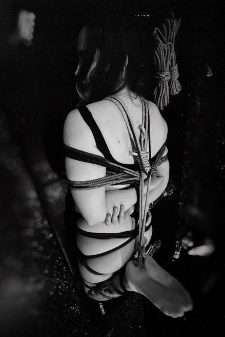

Lo que se tocaantes denombrarlo.
Nueve imágenes del espacio. Ninguna explícita. Todas con algo que decir.
Nueve piezas del espacio
El peso del acero frío avisa antes que cualquier palabra.
Las cadenas cortas obligan a estar cerca. No es un castigo: es una decisión.

El corsé no aprieta: recuerda. Cada respiración es una forma de estar presente.

La piel responde despacio. Hay que saber esperar antes de retirar.

Cada hebilla pesa lo justo para recordar que está ahí.

Cuero curtido despacio: huele a trabajo hecho sin prisa.
Nueve metros de cuerda tratada a mano, sin nudos que muerdan.

La cuerda no ata: sostiene lo que ya se ha decidido entregar.

La tensión justa se nota en la respiración, no en la cuerda.
Ver no es lo mismo que estar.
Si algo de lo que has visto te ha hecho detenerte, escribe. La conversación no compromete a nada.
Solicitar contacto